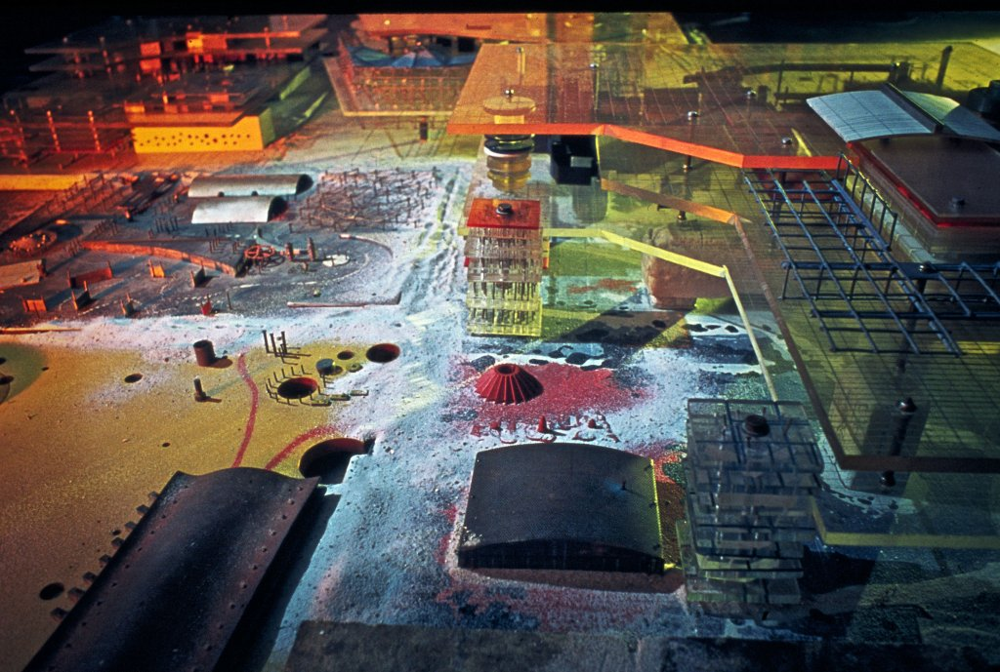
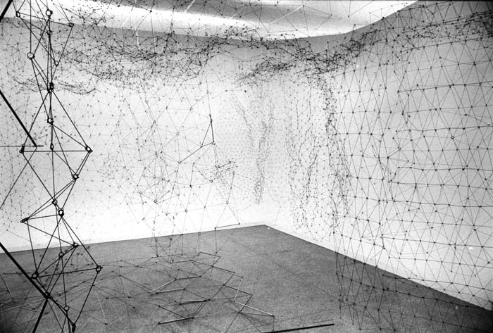
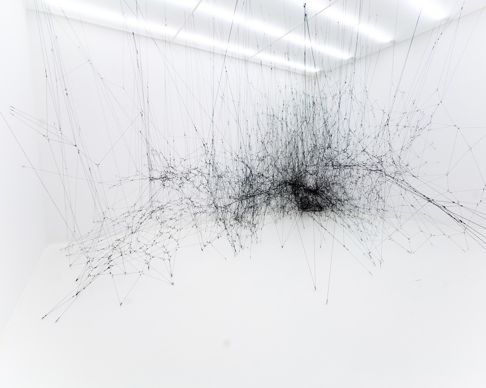

After beeing working as an architect I decided I needed to change my career for something more flexible and joined le wagon
See it for yourself!|  |
ConstantConstant Anton Nieuwenhuys (21 July 1920 – 1 August 2005), better known as Constant, was a Dutch painter, sculptor, graphic artist, author and musician. |
|  |
GegoGertrud "Gego" Louise Goldschmidt , was a modern Venezuelan artist and sculptor. Gego's most popular works were produced in the 1960s and 1970s, during the height of popularity of Geometric abstract art and Kinetic Art. |
|  |
Tomás SaracenoTomás Saraceno (San Miguel de Tucumán, 1973) is a contemporary artist. He is best known for his large-scale, interactive installations and floating sculptures, and for his interdisciplinary approach to art. |